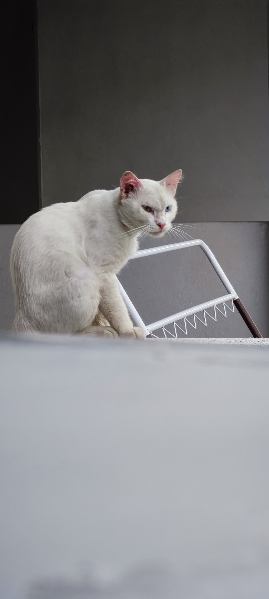
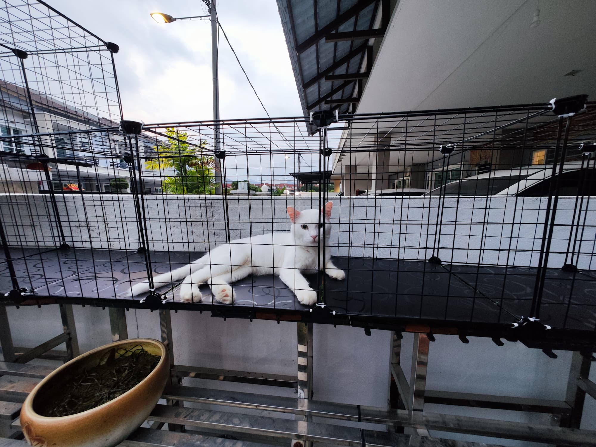
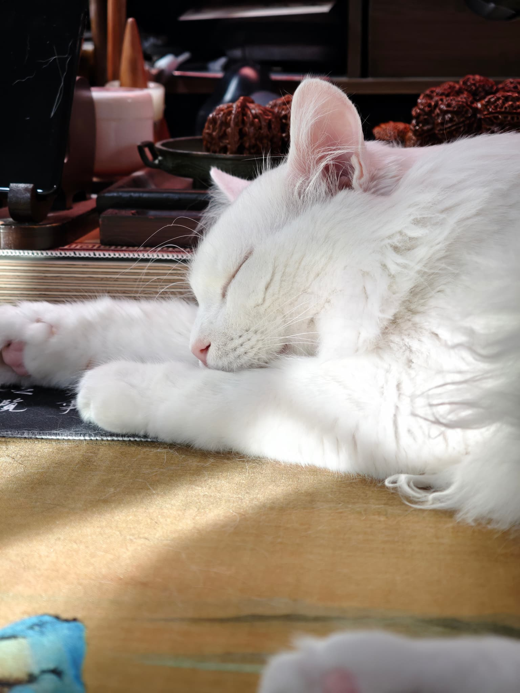
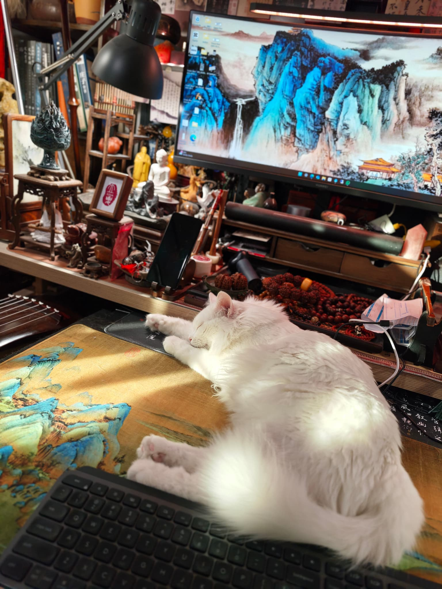

我和太太从来不打算养猫。那时候我们只是在家门口偶尔喂一两只街头的流浪猫，以为这只是随手的善意，不会有什么改变。
傻猪就是在那时候出现的。一只白色的流浪猫，毛色灰扑扑的，身上带着街头生活留下的风霜。每天来吃饭，吃完就走，不亲近，不撒娇，保持着流浪动物特有的距离感。
我们不知道他是异瞳猫。脏兮兮的白毛、警惕的眼神，没有人会多看他一眼。他只是街角的一只流浪猫，如此而已。

有一天，傻猪来吃饭的时候，浑身是伤。脸上、身上都有伤口，不知道在外面经历了什么。
我没有多想，隔天就把他送去看兽医。住院几天，治好了伤。
回来之后，我把他关在新买的猫笼里，放在户外。那时候还没打算收养他，只是想让他安全地恢复。但怡保的中午太热了，看着傻猪在笼子里不舒服，我没忍住——把笼子搬进客厅，开了空调。
就这样，一个脏兮兮的流浪猫，走进了我们的家。
傻猪那时候还没绝育，不习惯室内生活，偶尔会吵着要出去。我们是养猫新手，不知道该怎么办。
有一天我决定试试——不关笼子，让他自由走动。
结果傻猪非常乖。没有捣蛋，没有乱跑，就这样慢慢地，把我们家当成了他的家。
后来我亲手搭建了一个户外catio，让他可以安全地晒太阳、看鸟、接触大自然，却不会再回到危险的街头。一个曾经流浪四方的猫，有了自己的王国。


洗干净了，毛发蓬松了，我们才真正看清楚他的眼睛。
一只眼睛是棕色的，一只是蓝色的。
异瞳猫。我们一直在喂一只异瞳猫，却没有发现。
道家说，璞玉未经雕琢，不知其美。傻猪一直都是仙猫，只是我们太迟看见。

傻猪现在是整个家的主人。书房里的案台是他的床，键盘是他的枕头，佛像和法器是他的邻居。
他不在乎周围是什么，只是慵懒地躺着，偶尔睁开那双异瞳看你一眼，然后继续睡。
我有时候看着他，想到庄子说的——至人无己，神人无功，圣人无名。傻猪什么都不做，却好像什么都做了。

后来我们才知道，傻猪在流浪的时候，已经和我们收养的玳瑁猫肥婆相遇了。
肥婆生下了三只猫，大哥小白，是傻猪的儿子。同样的异瞳，同样的白毛，99%像傻猪。
我们喂了一只流浪猫，最后连他的儿子都来到了我们家。万物相连，因果循环——这就是玄猫之道。